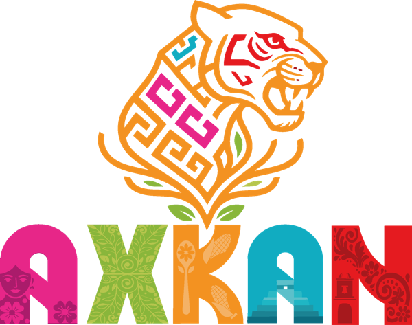

Quintana Roo, México
CANCÚN
Donde el Caribe susurra historias antiguas
21.1619° N · 86.8515° W
Descubre

Donde el Caribe susurra historias antiguas
21.1619° N · 86.8515° W
Explora Cancún

El mirador más icónico del Caribe mexicano. Arena blanca, agua turquesa y el letrero gigante donde todos se toman la foto. Sin hoteles al frente — solo tú y el mar infinito.

Para los mayas eran puertas al inframundo. Hoy son piscinas naturales de agua cristalina donde las raíces de la selva tocan el agua. Formados hace 66 millones de años.

Tulum es la única ciudad maya construida frente al mar. Chichén Itzá, maravilla del mundo, está a 2 horas. Y El Rey tiene iguanas tomando el sol entre pirámides en la zona hotelera.

El MUSA tiene 500+ esculturas bajo el mar. De junio a septiembre nadas con tiburones ballena. El segundo arrecife más grande del mundo empieza aquí.

Isla Mujeres: colores que no caben en una foto. Isla Holbox: calles de arena, bioluminiscencia nocturna y cero coches. El Cancún que el tiempo olvidó.

A través del tiempo

Toca para descubrir

A 20 minutos en ferry. Playa Norte está entre las 10 mejores del mundo. Snorkel con tortugas y atardeceres que pintan el cielo de fuego.

500+ esculturas de Jason deCaires Taylor sumergidas entre 4 y 8 metros de profundidad. Arte que se convierte en arrecife artificial.

La única ciudad maya frente al mar. Su Castillo vigila el Caribe desde un acantilado de 12 metros, justo donde nace cada amanecer.
La serpiente emplumada desciende cada equinoccio por la escalinata de El Castillo. Una de las 7 maravillas del mundo moderno.
Momentos
El mirador icónico
Piscina sagrada maya
Historia y mar
Paraíso de colores

Maravilla del mundo
Mundo submarino